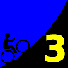

|  |
2008 Low-Key Hillclimbs Week 3: Quimby Road (Murillo start) 18 Oct 2008 |
| Aerial photo of Quimby Road (Murillo start), courtesy of Stanford Cycling |
Quimby Road... ah! the mere mention of the name strikes fear in the heart of long-timers. Distant memories, fading, 13 years past, but not enough, still there, memories, memories of of the pain.
The pain returns.Quimby Road rises from residential San Jose, steep enough at first. Not too bad, you think. Doable. But then the switchbacks begin.... first one, then another, the grade increasing, ever increasing, the screw turning, turning, turning until the final relentless straight to the finish.
Quimby. An old friend back again.
Our insurance demands it: helmets are required. Sorry kids, no exceptions!
Registration will be at Evergreen Valley High School (3300 Quimby Road, near Ruby Avenue). Parking is available in the visitor parking lot, and that's where we'll meet. We'll promenade from there to Murillo, where the timing will begin. This cuts a mile off the climb we used back in 1995, but such is the price of sprawl.
| stats | 3.3 miles, 1700 feet, 9.8% |
| format | mass start |
| time | reg 9:15 - 10:00 start 10:10am |
| coordinator | |
| aerial view | Stanford Cycling |
| route profile | Motionbased profile |
| weather | Weather Underground Weather Bonk |
| registration form |
PDF release form |
| entry fee | $10 voluntary donation free for juniors 2 free for volunteers free for coordinators |

{kind=link}
{kind=link}